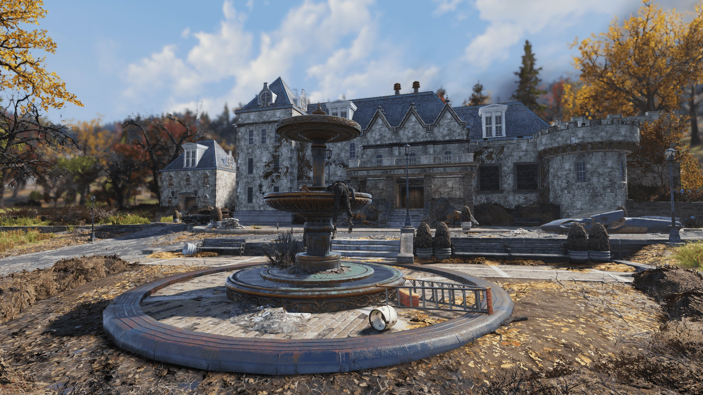
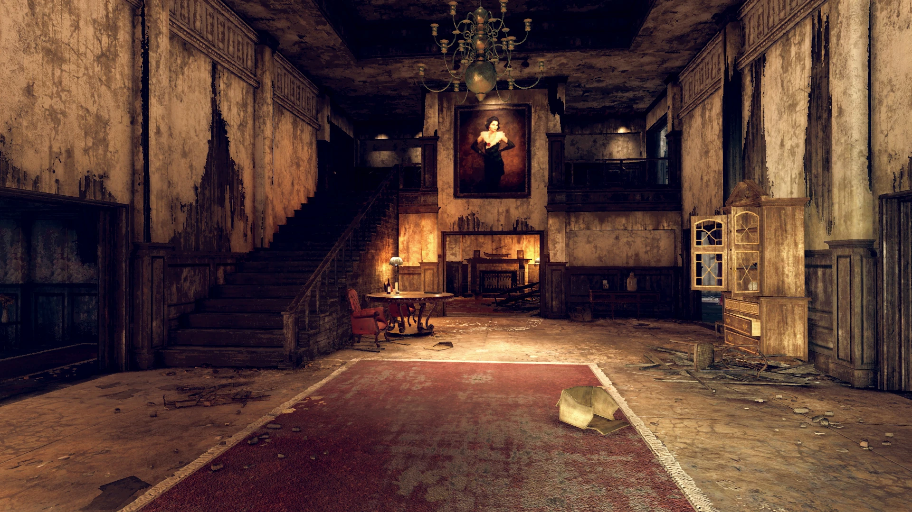
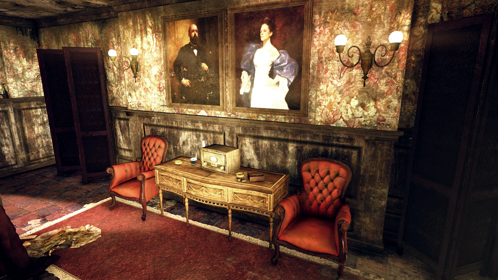
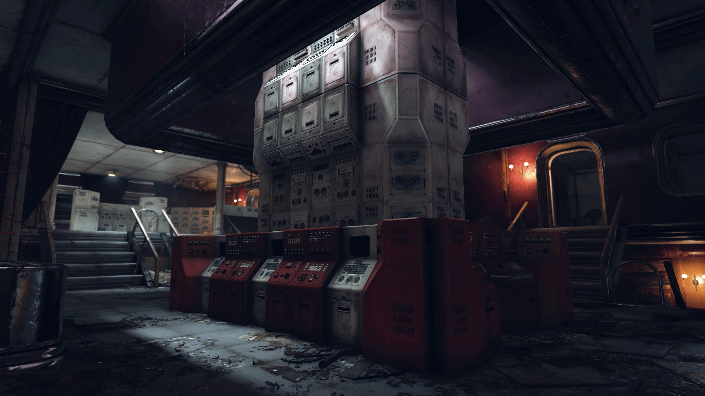
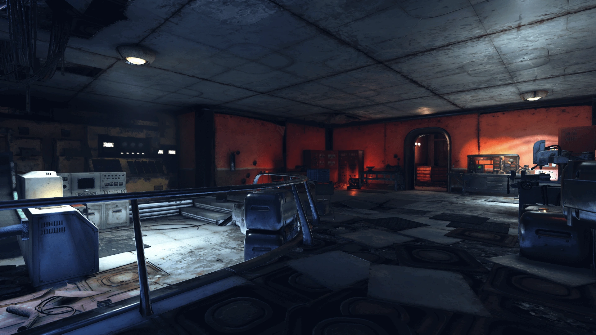
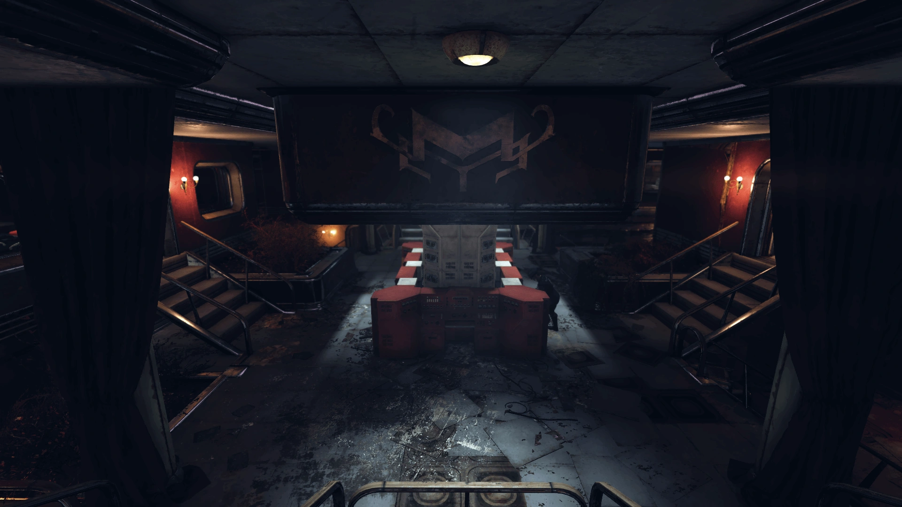
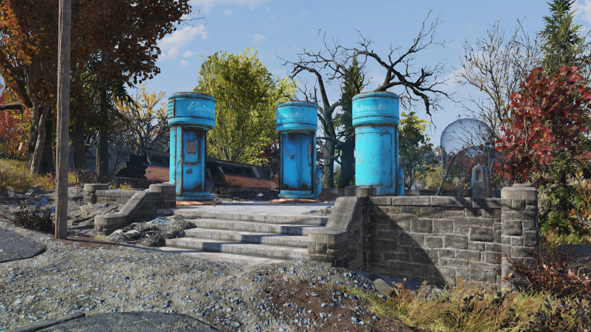
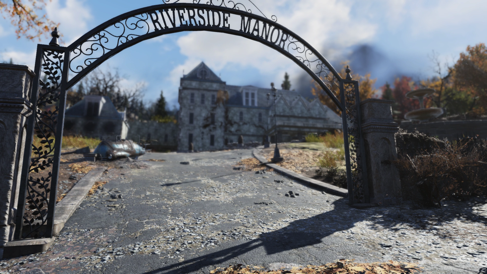

Riverside Manor
リバーサイド・マナー
概要
リバーサイド・マナーは、アパラチアの森林地帯にある邸宅です。
背景
現在は干上がったサマーズビル湖を見下ろすウエストバージニアに建設されたリバーサイド・マナーは、アパラチアの旧家の衰えゆく栄華の記念碑です。
21世紀後半の所有者はリバーズ家の一族——フレデリック、シャノン、そして娘のオリビアでした。
一般には知られていませんが、リバーズ家の邸宅には秘密がありました。フレデリックが妻のために設計した地下の巨大なハイテク施設です。
これはシャノンが架空のスーパーヒロイン「ミステリスの女主人」としてシルバー・シュラウドTVシリアルに出演する準備を支援するためのものでした。
ロブコ・インダストリーズのカスタムコンピュータメインフレーム「クリプトス」（元々は国防情報局のために製造）を取得し、シャノンが最高のフィジカルコンディションに達するための「試練の間」として施設を整備しました。
シャノンはこれを気に入りましたが、裏取引によって役が若い女優に渡り、当初の努力は無駄に終わったかに見えました。
オーダー・オブ・ミステリーの本拠地
2077年の大戦直後、地下施設はリバーズ家にとって放射線と社会崩壊から守られたシェルターとなりました。
やがてシャノンは「ミステリスの女主人」という保護者の仮面の可能性に気づき、フレデリックと共に自宅を機能する作戦拠点に変えました。これがオーダー・オブ・ミステリーの核となりました。
「試練の間」は、黙示録で孤児となった少女たちを訓練された暗殺者に育て上げ、デイビッド・ソープのレイダーやスーパーミュータントなどの脅威を排除してアパラチアの人々を守ることを使命としました。
高度なファブリケーターが組織の装備と武器を提供し、フレデリックが技術支援を担当しました。
マナーの役割は2086年末に終わりを迎えます。組織の他のメンバーがオリビアのレイダーとの内通を発見し、追い詰められたオリビアは館内の全員を殺害しました。
この事件が組織の崩壊を招き、その後まもなくオリビアとシャノンがセネカ・ロックスで死亡し、マナーとその隠された地下施設は空き家として放棄されました。
2102年までに、マナーとその敷地は地域を制圧したスコーチに占拠されましたが、地下施設は手つかずのまま残っていました。
レイアウト
チャールストン議事堂の南に位置するリバーサイド・マナーは、干上がったサマーズビル湖の岸辺近くに建つ大邸宅です。
西の道路沿いには3基のプロウスキー・シェルターがあり、地下施設への秘密のエレベーターを隠しています。
邸宅正面には大きな噴水があり、正面玄関の階段の両脇には石のライオン像が並んでいます。
庭にはシャクナゲとスートフラワーが咲いています。
マナーのホワイエの中心には、ミステリスの女主人として演じるシャノン・リバーズの大きな肖像画があります。
階段が2階へと続き、ホワイエの東にはアップライトピアノのある談話室があり、地下への秘密の入口を隠しています。
1階にはリビングルーム、ランドリー、プールテーブルとグランドピアノのあるキッチン兼ダイニングエリアがあります。
キッチンにはロックされた（ピックロック2）パントリーがあります。
2階にはいくつかの寝室と書斎があります。マスターベッドルームはメイン階段の正面にあり、ウォークインクローゼットにはロックされた（ピックロック3）金庫があります。
東の廊下の先にはオリビア・リバーズの部屋があり破壊されていますが、ロックされたターミナルが残っています。
屋上にはジャンク、ツールボックス、ロックされた（ピックロック2）金庫があります。
地下施設
オーダー・オブ・ミステリーの施設には談話室からアクセスします。開くには「使い古されたベール」（黒いドレスに2つの緑のシェブロンが付いた死体から入手。最も近いのはホーンライト・サマー・ヴィラのワインセラー）が必要です。
施設はクリプトスメインフレームを中心に構成され、昇進とクエスト進行に使用されます。
上階には北側の医務室（ケミストリーステーション、ターミナル、金庫付き）、南側の評議会室（ターミナル付き）、西隅の女主人のオフィスがあります。
下階には南側に生産棟（ファブリケーターターミナルとクラフティングステーション3台）、西側に試練の間（機能停止）と更衣室、北側に保管室があります。
北西の長い廊下の先にはプロウスキー・シェルターがあり、邸宅外のシェルターは地下への秘密のエレベーターです。
主なアイテム
ホロテープ
- Order of Mysteries - Production log 194/209/212 — 下階南側の生産棟
- Order of Mysteries - Rank: Initiate/Novice/Seeker/Mistress — クリプトスから支給
- Order of Mysteries - The Blade of Bastet / The Phantom Device / The Voice of Set — クリプトスから支給
- Order of Mysteries - Council recording — 評議会室ターミナル上
- Order of Mysteries - Infirmary log — 医務室のパスワードロックされたターミナルからアクセス
コレクタブル・その他
- Vault-Tecボブルヘッド（ランダム×2） — 2階角の寝室、マスターベッドルーム外のビューロー
- 雑誌（ランダム×4） — ランドリー、図書室、2階の寝室、ゲストベッドルーム
- Veil of Secrets / Garb of Mysteries / Blade of Bastet / Voice of Set / Phantom Device — ファブリケーターから製造
- フュージョンコア — 地下の武器作業台付近
登場作品
リバーサイド・マナーはFallout 76にのみ登場します。
ギャラリー








リバーサイド・マナーは、Fallout 76で最もドラマチックなロケーションの一つです。
表向きは優雅な旧家の邸宅、しかし地下にはスーパーヒロインの秘密基地——この二面性がたまりません。
フレデリックが妻のために国防情報局向けのメインフレームまで手配したという、途方もないスケールの愛情表現。
やがてそれが黙示録後の少女たちを守る組織の礎となり、最終的にはオリビアの裏切りですべてが崩壊する——
ターミナルを一つ一つ読み進める度に、リバーズ家の栄光と悲劇が胸に迫ります。
This article was created by translating and editing Riverside Manor from Nukapedia: The Fallout Wiki.
Licensed under the Creative Commons Attribution-Share Alike License (CC BY-SA 3.0).
コミュニティ維持のため、寄付を受け付けております。
> COMMENTS